Tropical FishTropical fish can be either Saltwater (also known as Marine) or Freshwater species and are available in a huge variety of colors and sizes. Successfully keeping tropical fish is a skill, not all fish are good community fish and different species require a variety of water conditions such as temperature and PH levels. When selecting fish for your tropical aquarium, it is advisable to do as much research as possible and do not select tropical fish for your tank based on their appearance alone, this can lead to disaster! It is vital to check the PH level of your water on a regular basis to ensure your tropical fish remain healthy. 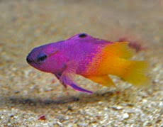 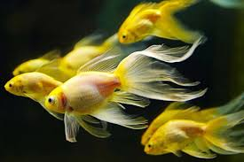 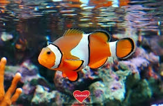 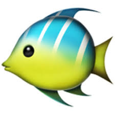 |
|---|
Marine FishThere are hundreds of species suitable for marine aquariums, from Fish to Sharks and Coral to Crustaceans. A huge variety of shapes and colors are available but before purchasing it is important to research each marine species and their individual requirements. Fish native to the Atlantic ocean will have different requirements to those from the, Pacific or Indian Ocean. Certain fish are not ideal for a community marine aquarium and need to be kept isolated! Special consideration needs to be given to the types of filters used and the quality and temperature of the water. If in doubt, ask your local pet shop for their advice. 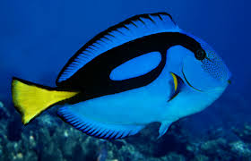 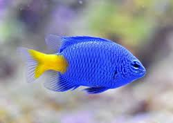 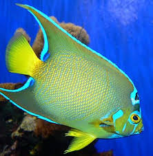 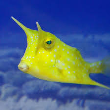 |
|---|
Cichlid FishCichlid is a type of freshwater fish. More than 1600 species of cichlid have been described so far, but scientists believe that the true number of species is much bigger (2000 to 3000 species). Cichlids can be found in the Great Lakes of Africa and in the rivers and lakes of South America. They are often kept in the aquariums because of their colorful bodies and peaceful and hardy nature. Many species of cichlid are classified as endangered due to uncontrolled hunting, collecting of cichlids for the aquariums, introduction of predators and pollution of the water. 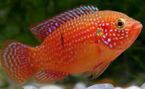 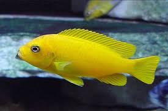 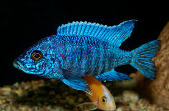 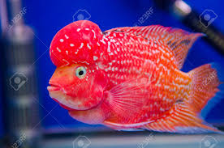 |
|---|